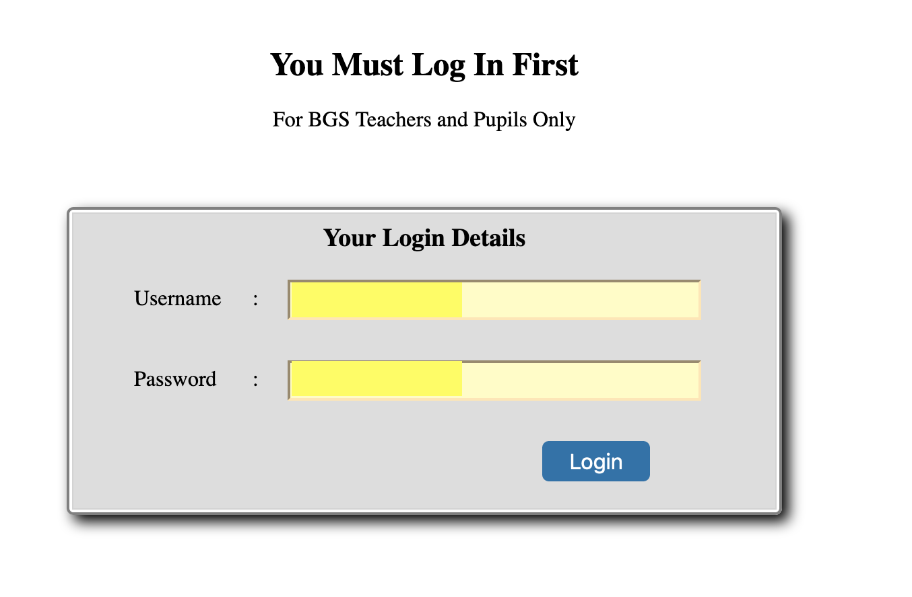
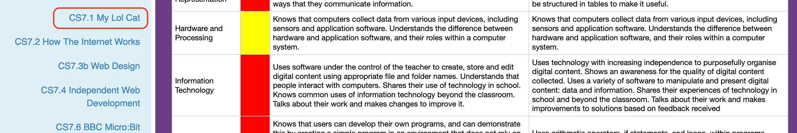
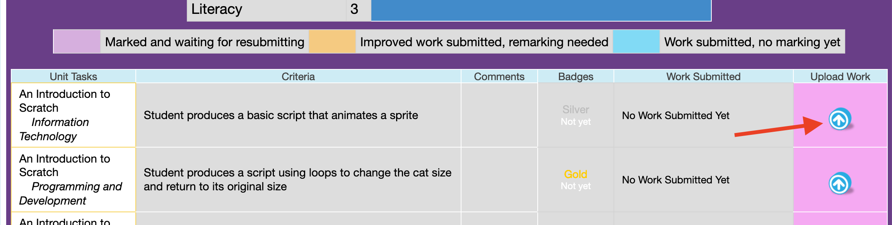

Submit Work Exercises
1 A step-by-step guide for submitting your work
- During Computer Science lessons, you are required to submit your work online to be marked by your teachers.
- The place you upload your work is www.bournetolearn.com
- You can upload your work at school and at home, using school computer or home computer, or your phone.
Step 1: Prepare your work for uploading
- If you have work that is only one page long, it would be best to take a screenshot of it and upload as image.
- Regardless of screenshot or not, you need to save your work in its original format/file type. For examples, you wrote one page in Microsoft Word, you MUST save it as a ".docx" file first so when you teacher gives your feedback on how to improve, you can open it again in Word and edit it.
- Always save your work using meaningful file name, such as "week1-silver", "hangmanGame" etc.
- You can take a screenshot using the software called "snipping tool":
snipping tool launch imahge
Step 2: Upload your work
- To upload your work:
- Log in to www.bournetolearn.com using your normal BGS login ID and password 
- click on the unit your work is about on the left side pane 
- locate the task on the right side and click on the blue arrow 
- Repeat step 3 if you have more than one file to upload to the same place